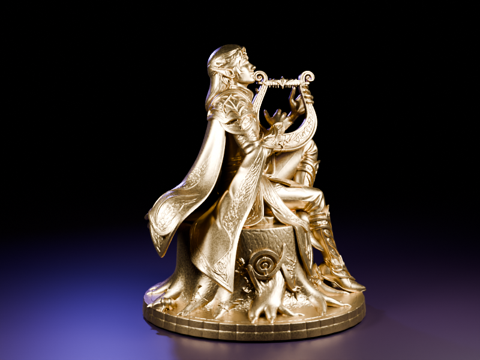
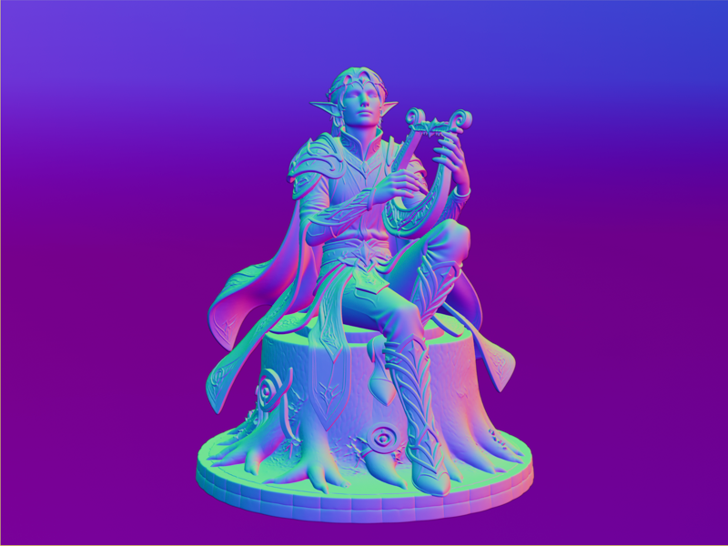

← Work & Projects
Elf Bard
2026
A character produced through a prompt-to-3D pipeline: a text prompt generates a concept image, which is converted into a mesh and refined in Blender. The subject is an elf bard seated on a tree trunk playing a lyre, aimed at a graceful, dynamic single pose.
Concept selection focused on silhouette, since a figure like this reads by its outline, while watching for AI artifacts that look convincing in a flat image but fall apart as real geometry. I used ChatGPT for the concept image and Tencent Hunyuan 3D for the mesh, then moved into Blender for cleanup and a clean shader and lighting setup.

